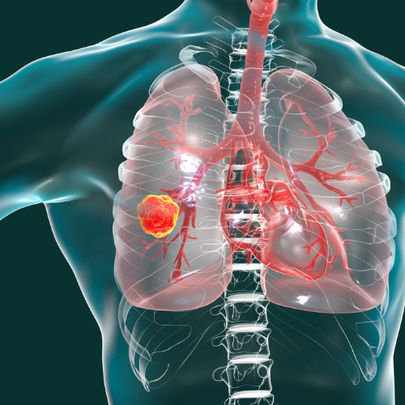
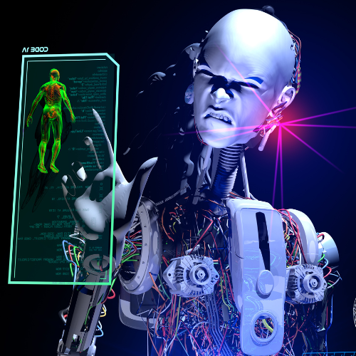

Projektek
A data science és a szoftverfejlesztés széles palettáján mozgunk. NLP, computer vision, time series, recommendation systems, data-driven business development, big data és cloud megoldásokat fejlesztettünk az eddigi éveink alatt. Valós piaci megoldásokat szállítunk (MLOps). Nyitottak vagyunk együttműködésre, közös termék fejlesztésére, finanszírozás keresésére. Data scientistek és szoftverfejlesztők kiajálásával is foglalkozunk.
Tüdőrák diagnosztika mesterséges intelligencia segítségével
Tüdőrák detektálása radiológiai felvételeken. Együttműködés kutató orvosokkal és kórházakkal. Kulcsszavak: tüdőrák szegmentálás, rákdiagnosztika, radiológia, computer vision
Okos épület projekt gépi tanuló algoritmussal
Manapság már léteznek olyan jól felszerelt épületek, ahol számos különböző adat mentésre kerül. Gépi tanuló algoritmussal mintázatokat kerestünk a felhasználói tevékenységekben és növeltük az energiahatékonyságot. Kulcsszavak: smart building, gépi tanulás, time series forecasting, gRPC, docker
Gyűlöletbeszéd detektálása az interneten
Az online gyűlöletbeszéd rendkívül veszélyes, ugyanis a gyűlölet akár tettlegességig is fajulhat bizonyos esetekben, máskor viszont komoly pszichés deformációkat okozhat a gyűlöletbeszédet elszenvedőkben. Létrehoztunk egy olyan mesterséges intelligencia alapú algoritmust, amely képes magyar szövegekben azonosítani a gyűlöletbeszédet, származzon az a szöveg akár social media platformokról, hírekből vagy blogokról. Kulcsszavak: online gyűlöletbeszéd detektálás, gépi tanulás, neurális háló, NLP (Natural Language Processing)
Ügyfelek lemorzsolódását előrejelző algoritmus
Egy felhasználót megszerezni sok pénzbe kerül, ezért nagyon fontos a megtartásuk. Ha időben tudja a cég, hogy kik azok, akik várhatóan le fognak morzsolódni, akkor ezeket a felhasználókat még időben meg tudják keresni és a számukra megfelelő lehetőséget ajánlani. Nem csupán egy priorizált lista a cél ebben az esetben, hanem annak megmutatása, hogy milyen tényezők játszanak szerepet a lemorzsolódásban, valamint azt, hogy mikor szükséges beavatkozni a folyamatba. Kulcsszavak: Marketing, churn, gépi tanulás, adatvizualizáció
Szélerőmű meghibásodás előrejelzés
Szenzorok adataiból szélerőműveknek előrejeleztük és osztályoztuk a várható meghibásodását. Kulcsszavak: Ipar, szélerőmű, neurális háló, hyperparameter tuning Kulcsszavak: NLP (Natural Language Procesing), gépi tanulás, neurális hálók, ajánlórendszerek, REST API
Ajánlórendszer fejlesztése HR tevékenységhez
Szabadúszók számára algoritmusunk képes kiválasztani a számukra legvonzóbb, legrelevánsabb projekteket. Emellett a projektek kiírói számára megmutatjuk a számukra legmegfelelőbb szabadúszó, vállalkozó szakembert. Kulcsszavak: NLP (Natural Language Procesing), gépi tanulás, neurális hálók, ajánlórendszerek, REST API Kulcsszavak: dinamikus árazás, gépi tanulás
Dinamikus árképzés
Ügyfelünknek olyan előfizetési modellje van, amelyben a felhasználók maguk rakhatják össze csomagjaikat preferenciáik szerint. Ezen csomagok árai a felhasználó várható üzleti hasznával arányosan kerülnek kikalkulálásra mesterséges intelligencia segítségével. Kulcsszavak: dinamikus árazás, gépi tanulás Kulcsszavak: marketing, gépi tanulás
Ki fog várhatóan előfizetni
Érdemes figyelembe vennie a marketingnek, hogy az adott látogatók mit tudnak már a cégről, hányadszor járnak az oldalon, milyen korább tevékenységeik voltak. Ha ezek a fenti információk rendelkezésre állnak, már célirányos marketinget lehet folytatni és lehet a konverziót javítani. Egyik korábbi munkánkban a fentebbi kérdésekre kerestük és találtuk meg a válaszokat. Kulcsszavak: marketing, gépi tanulás
Ügyfélajánló rendszer
Bármilyen is a gazdasági helyzet, minden profitorientált vállalat ügyfeleket szeretne. Saját termékünk ügyfeleinknek ajánl új vásárlókat B2B (business to business) szektorban. Kulcsszavak: NLP (Natural Language Processing), gépi tanulás Kulcsszavak: machine learning, adatvizualizáció
Használtautó adatbázis tisztítása gépi tanuló algoritmussal
A használtautó kereskedők gyakran helytelen adatokat visznek fel egy-egy autóhoz az adatbázisban, például az autó típusa, hengerűrtartalma, ajtók száma. Ezeket a bejegyzéseket kézzel évekig tartana javítani emberi erőforrással. A hibás adatok detektálása és javítása mellett adatvizualizációval megmutattuk azt is, hogy a különböző hibák milyen esetekben és milyen gyakorisággal fordulnak elő. Kulcsszavak: machine learning, adatvizualizáció
Pályázatbeadást megkönnyítő félautomata rendszer fejlesztés

A pályázatoknál különböző dokumentumokat kell benyújtani a sikeres pályázáshoz. Algoritmusunk képes megkönnyíteni a pályázatírók munkáját, ugyanis kigyűjtjük számukra gépi tanuló algoritmusok segítségével a kitöltendő dokumentumok listáját akár scannelt pdf-ekből is. Emellett akár egyedi dokumentum sablonokat is képes azonosítani és bizonyos elemeit automatikusan kitölteni a pályázó adataival. Nem csupán tanuló rendszer fejlesztése volt a feladatunk, hanem egy webes felület elkészítése is. Kulcsszavak: NLP (Natural Language Processing), gépi tanulás, neurális hálók, REST API, webfejlesztés, UI Kulcsszavak: machine learning, adatvizualizáció
Ügyfélszolgálatosok munkájának megkönnyítése
Algoritmusaink segítségével az ügyfélszolgálatosok munkáját olyannyira meg tudtuk gyorsítani, hogy kétszer gyorsabban végzik és nagyobb pontosággal a munkájukat a gépi ajánlásoknak köszönhetően. Kulcsszavak: NLP (Natural Language Procesing), gépi tanulás, neurális hálók, RESTAPI Kulcsszavak: NLP (Natural Language Processing), gépi tanulás, neurális hálók, REST API, webfejlesztés, UI
Csalásdetektálás
Ügyfelünknél problémát okozott, hogy az alkalmazottak visszaéltek a helyzetek adta lehetőséggel és titokban nem valós fogyasztási adatokat írtak az adminisztrációba, ezzel megkárosítva a céget. Utóbbi tevékenységeket jeleztük elő gépi tanuló algoritmussal. Kulcsszavak: idősor előrejelzés, csalásdetektálás, neurális hálók Kulcsszavak: machine learning, adatvizualizáció
Tőzsdei árfolyammozgás előrejelző rendszer
10 éve foglalkozunk ezzel a területtel, sok évig hobby csapatban fejlesztettünk automata tőzsdei robotokat. Kulcsszavak: tőzsde, idősor előrejelzés, gépi tanulás, neurális hálózatok, stock, crypto
Streamelt videókból a legjobb jelenetek felismerése
Ügyfelünknek játékfejlesztő cége van, a felhasználói Youtube-on szoktak streamelni, miközben játszanak. Ezek általában 4-5 órás videók. A feladatunk az volt, hogy találjuk meg a videó kommentjei alapján azokat a jeleneteket, amelyek a legjobbak voltak a videóban azért, hogy azokból egy 2-3 perces videót tudjon összevágni ügyfelünk. Kulcsszavak: videó, stream, youtube, komment
Cikk ajánlórendszer
A felhasználók számára cikkek ajánlása annak alapján, amiket a felhasználó már megnyitott, elolvasott, esetleg értékelt. Kulcsszavak: Ajánlórendszer, gépi tanulás